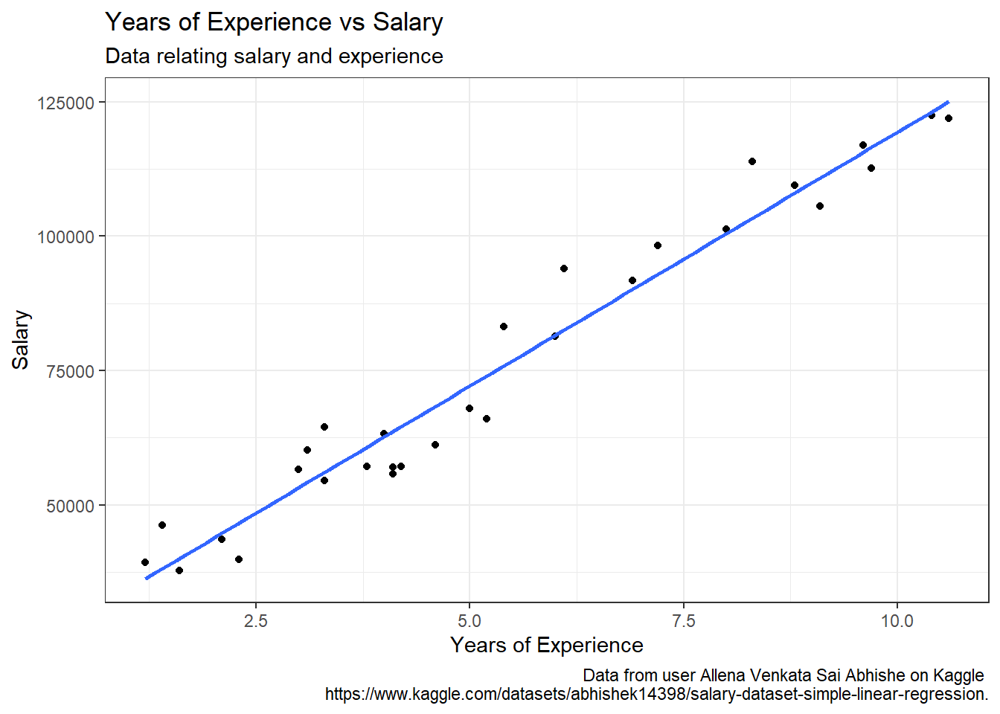

Having experience can be an excellent metric in evaluating the skill of an employee. Based on this assertion we would expect the number of years of experience to be correlated to the salary of an employee. How well does years of experience predict salary? My goal here is to create a simple linear regression model between the years of experience and salary from the “Salary Dataset - Simple linear regression” dataset from the user Allena Venkata Sai Abhishe on Kaggle. This dataset was created to help teach linear regression.
Setup
I will be using packages such as dplyr and ggplot2 in the tidyverse for data manipulation and visualization.
Load Data
I am loading the data from “Salary_dataset.csv” in my “data” folder. Using the glimpse function I can see there are 30 observations. Each row contains the years of experience, the salary for an individual, and an id column.
Let’s explore the salary values in the dataset. While it is not specified for the dataset, the profile of the user who posted this dataset is from the UK so the salaries may be in Pounds. To see the distibution of this variable, I am using a histogram. To find a good number of bins I am using the formula \(\lceil \log_2(n) \rceil\) where n is the number of observations, in this case 30.
Since there are few observations, the histogram is not very smooth but we can see a somewhat bimodal distribution with a larger spike around 60000 and a smaller one around 110000. Overall the distribution is fairly symmetric with slight skewness to the right. The median salary is 65238 with an IQR of 43824.
Linear Association
I can visually explore the relationship between these two variables using a scatter plot. From the plot it is clear the data is linear and the line of best fit seems like a good model.
salary_df |>ggplot(aes(YearsExperience, Salary)) +geom_point() +geom_smooth(method ="lm", formula = y ~ x, se =FALSE) +labs(title ="Years of Experience vs Salary",subtitle ="Data relating salary and experience",x ="Years of Experience",y ="Salary",caption ="Data from user Allena Venkata Sai Abhishe on Kaggle https://www.kaggle.com/datasets/abhishek14398/salary-dataset-simple-linear-regression." ) +theme_bw()

Figure 3: Years of Experience vs. Salary Scatterplot
Modeling
I am creating a linear model where years of experiences are used to predict the salary of an employee.
model <-lm(Salary ~ YearsExperience, data = salary_df)model_summary <-summary(model)model_summary
Call:
lm(formula = Salary ~ YearsExperience, data = salary_df)
Residuals:
Min 1Q Median 3Q Max
-7958.0 -4088.5 -459.9 3372.6 11448.0
Coefficients:
Estimate Std. Error t value Pr(>|t|)
(Intercept) 24848.2 2306.7 10.77 1.82e-11 ***
YearsExperience 9450.0 378.8 24.95 < 2e-16 ***
---
Signif. codes: 0 '***' 0.001 '**' 0.01 '*' 0.05 '.' 0.1 ' ' 1
Residual standard error: 5788 on 28 degrees of freedom
Multiple R-squared: 0.957, Adjusted R-squared: 0.9554
F-statistic: 622.5 on 1 and 28 DF, p-value: < 2.2e-16
This gives an \(R^2\) value of 0.9569567 which confirms there is a strong correlation between the two variables. I can also see out model has a y-intercept of 2.4848204^{4} and a slope of 9449.9623215.
Residuals
Looking at the residuals I can see that there is no apparent pattern so the linear model is appropriate.
broom::augment(model) |>ggplot(aes(x = .fitted, y = .resid)) +geom_abline(slope =0, intercept =0, color ="blue") +geom_point() +labs(x ="Predicted", y ="Residual") +theme_bw()
Figure 4: Residuals of Model
Predictions
Just for fun I am predicting with the model the expected salary for 3, 5, and 7 years of experience.
From the data I determined that salary could be predicted by years of experience with the linear equation \(\hat{y} = (9450.0) \hat{x} + 24848.2\). Based on this model, an increase of 1 year of experience corresponds to an expected increase in salary of 9449.96 for this dataset. So it seems years of experience is an important predictor for an employee’s salary. However, because I do not know the origin of this data, these results cannot be generalized to a population.